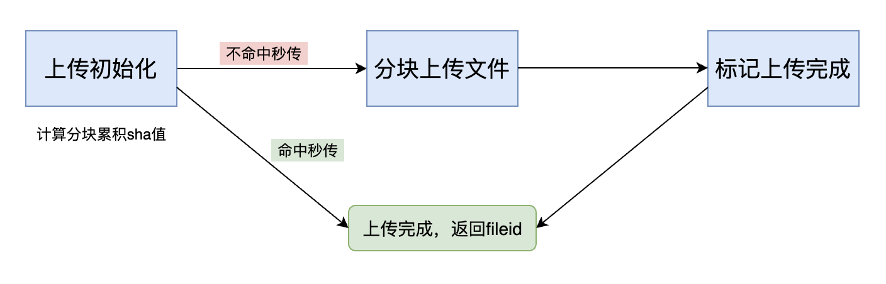

文件分块上传
最后更新：2023/03/09
目录
为了支持大文件上传，将文件进行分块，然后分别上传。
步骤如下：

- 上传初始化：计算文件的分块（分块大小固定为
2M，即2097152字节）的累积sha值（使用sha1算法），提交到企业微信开放平台。如果命中秒传，后续步骤则不需要再进行。 - 分块上传文件：分别上传分块文件（可并发上传，并发数建议不超过10）
- 标记上传完成：如果文件上传完整，返回上传成功的fileid
权限说明
- 企业需要使用“微盘”secret所获取的accesstoken来调用（accesstoken如何获取？）
- 自建应用需配置到“可调用应用”列表中的应用secret所获取的accesstoken来调用（accesstoken如何获取？）
- 第三方应用需具有“微盘”权限
- 代开发自建应用需具有“微盘”权限
分块上传初始化
请求分块上传初始化接口，如果命中秒传，则流程结束，完成上传。
请求方式：POST（HTTPS）
请求地址: https://qyapi.weixin.qq.com/cgi-bin/wedrive/file_upload_init?access_token=ACCESS_TOKEN
请求包体
{ "spaceid": "SPACEID", "fatherid": "FATHERID", "selected_ticket": "SELECTED_TICKET", "file_name": "FILE_NAME", "size": 123, "block_sha": [ "STATE1", "STATE2" ], "skip_push_card": false }点击复制
参数说明
| 参数 | 类型 | 是否必须 | 说明 |
|---|---|---|---|
| spaceid | string | 否 | 空间spaceid |
| fatherid | string | 否 | 当前目录的fileid，根目录时为空间spaceid |
| selected_ticket | string | 否 | 微盘和文件选择器jsapi返回的selectedTicket。若填此参数，则不需要填spaceid/fatherid。 |
| file_name | string | 是 | 文件名字 |
| size | uint64 | 是 | 文件大小。最大支持20G |
| block_sha | string[] | 是 | 文件分块累积sha值，按分块顺序填入数组。参考附录-分块累积sha说明 |
| skip_push_card | bool | 否 | 文件创建完成时是否推送企业微信卡片。默认false，即默认推送卡片 |
注意：spaceid/fatherid和selected_ticket必须填且仅填其中一组参数。
返回示例
{ "errcode": 0, "errmsg": "ok", "hit_exist": false, "upload_key": "UPLOAD_KEY", "fileid": "FILEID" }点击复制
参数说明
| 参数 | 类型 | 说明 |
|---|---|---|
| errcode | int32 | 错误码 |
| errmsg | string | 错误码说明 |
| hit_exist | bool | 是否命中秒传 |
| upload_key | string | 文件上传凭证。不命中秒传时返回，作为file_upload_part参数 |
| fileid | string | 文件fileid。命中秒传时返回，此时上传流程完成 |
分块上传文件
将文件内容按2M分块，依次请求分块上传文件接口。
请求方式：POST（HTTPS）
请求地址: https://qyapi.weixin.qq.com/cgi-bin/wedrive/file_upload_part?access_token=ACCESS_TOKEN
请求包体
{ "upload_key": "UPLOAD_KEY", "index": 1, "file_base64_content": "FILE_BASE64_CONTENT" }点击复制
参数说明
| 参数 | 类型 | 是否必须 | 说明 |
|---|---|---|---|
| upload_key | string | 是 | 文件上传凭证。file_upload_init返回的upload_key |
| index | int32 | 是 | 文件分块号。文件内容按2M分块，从1开始 |
| file_base64_content | string | 是 | 分块的文件内容base64。（注意：只需要填入文件内容的Base64，不需要添加任何如："data:application/x-javascript;base64" 的数据类型描述信息） |
返回示例
{ "errcode": 0, "errmsg": "ok" }点击复制
参数说明
| 参数 | 类型 | 说明 |
|---|---|---|
| errcode | int32 | 错误码 |
| errmsg | string | 错误码说明 |
分块上传完成
请求分块上传完成接口，流程结束，完成上传。
请求方式：POST（HTTPS）
请求地址: https://qyapi.weixin.qq.com/cgi-bin/wedrive/file_upload_finish?access_token=ACCESS_TOKEN
请求包体
{ "upload_key": "UPLOAD_KEY" }点击复制
参数说明
| 参数 | 类型 | 是否必须 | 说明 |
|---|---|---|---|
| upload_key | string | 是 | 文件上传凭证。file_upload_init返回的upload_key |
返回示例
{ "errcode": 0, "errmsg": "ok", "fileid": "FILEID" }点击复制
参数说明
| 参数 | 类型 | 说明 |
|---|---|---|
| errcode | int32 | 错误码 |
| errmsg | string | 错误码说明 |
| fileid | string | 文件fileid |
附录-分块累积sha说明

分块的累积sha值计算过程如下：
- 将要上传的文件内容，按2M分块；
- 对每一个分块，依次sha1_update；
- 每次update，记录当前的state，转成16进制，作为当前块的
累积sha值； - 当为最后一块（可能小于2M），update完再sha1_final得到的sha1值（即整个文件的sha1），作为最后一块的
累积sha值。
以上过程得到的sha值，保持顺序依次放到数组，作为file_upload_init接口的block_sha参数输入。
相关示例代码见：c++版本。其他语言可根据以上流程自行实现，跟提供的c++版本实际测试结果对比验证。
提供了demo文件和其对应的接口调用关键参数的说明文档，可用来验证开发者逻辑实现的正确性。